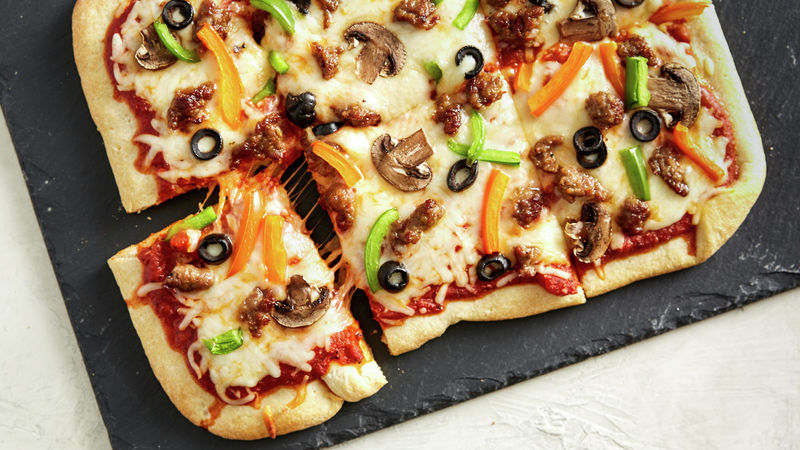

Click here to return to the homepag
Homemade Pizza
A fun activity and perfect for those picky eaters!

Description
This pizza dough is super simple, and toppings of your choice means
that everyone is happy!
Ingredients
- 1kg white bread flour
- 1 tsp salt
- 2x 7 dried yeast sachets
- 1 tbsp golden caster sugar
- 4 tbsp extra virgin olive oil
- Tomato puree/passata
- Pizza toppings of your choice
Method
-
Sieve the flour and salt onto a clean surface and make
a well in the middle.
-
In a jug, mix the yeast, sugar and oil into 650 ml of lukewarm
water, and then pour into the well.
-
Uisng a fork, bring the flour into the liquid gradually. When it
starts to come together use your hands to knead the mixture into a dough.
-
Place the dough in a bowl, cover with a damp cloth and leave for an hour.
-
Remove the dough and knead it slightly to remove the air. Divide up into balls
according to the number of pizzas that you're making - this dough should
make 6-8.
-
Roll the pizzas out around 15 minutes before you're goin to cook them.
Cover with the tomato puree or passata, and toppings of your choice,
we recommend a healthy layer of grated cheddar cheese on top.
-
Pop the pizzas on a baking tray and into a preheated oven at around 180
degrees for ten minutes. Leave to cool slightly and enjoy!